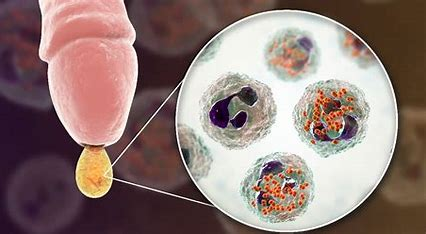

La sífilis es una enfermedad infecciosa que se transmite
principalmente por vía sexual. El agente causal es la
bacteria Treponema pallidum, cuyo síntoma más frecuente
es una úlcera indolora en la zona genital.
La sífilis es una enfermedad de transmisión sexual
(ETS) muy común que se contagia a través del sexo vaginal, anal y oral.
La sífilis causa llagas en tus genitales llamadas chancros.
Usualmente, estas llagas no son dolorosas, pero pueden contagiar
la infección fácilmente a otras personas. La sífilis se
transmite a través del contacto con las llagas. Muchas personas
con sífilis se sienten bien y no notan las llagas, así que puede
que no sepan que tienen la infección.
La sífilis puede infectar tu vagina, ano, pene o escroto
y, en ocasiones, tu boca y labios. Puedes prevenir la
sífilis usando condones o barreras de látex bucales cada vez que tengas sexo.
Si la tratas temprano, la sífilis se puede curar fácilmente con
La sífilis se contagia por el contacto sexual de piel a piel con alguien que tiene la infección. Te contagias cuando tu vulva, vagina, pene, ano o boca toca las llagas de alguien con sífilis, usualmente durante el sexo. Además, te puedes contagiar de sífilis aún cuando no haya eyaculación. La sífilis no se contagia por el contacto casual, de modo que NO PUEDES infectarte por compartir comidas o bebidas ni por dar un abrazo, tomarte de la mano con alguien, toser, estornudar, compartir una toalla o sentarte en un inodoro. La principal manera en que las personas se contagian de sífilis es cuando tienen sexo vaginal y sexo anal con una persona infectada. Es menos común contagiarte a través del sexo oral, pero puede ocurrir. La sífilis es muy contagiosa al principio, cuando aparecen las llagas, pero muchas personas no se dan cuenta que están infectadas porque no notan las llagas. Usar condón cada vez que tienes sexo es una de las mejores maneras de prevenir la sífilis, incluso si tú y tu pareja sexual parecen estar perfectamente bien.
|  |
|
El periodo de incubación, es decir, el intervalo de tiempo entre la infección y los primeros síntomas, |
|
En el 25% de los pacientes no tratados en la fase primaria, la sífilis reaparece al cabo de unas semanas o meses. |
|
Tras la desaparición de las lesiones en la fase secundaria, el paciente entra en la fase latente de la enfermedad. |
Síntomas de la sífilis terciariaLos pacientes pueden quedarse varios años, inclusive décadas, asintomáticos en la fase latente antes de un nuevo retorno de la enfermedad. Esta nueva fase, cuando los síntomas retornan, es llamada sífilis terciaria, la forma más grave de la sífilis. Actualmente, muchos autores dividen la sífilis en solamente dos fases: sífilis precoz y sífilis tardía. La sífilis precoz abarca todas las fases que se producen en el primer año de la infección, como la sífilis primaria, secundaria y latente precoz. La sífilis tardía incluye la fase latente tardía y la sífilis terciaria. Esta división es útil para definir el régimen de tratamiento (lo explicaremos más adelante). |